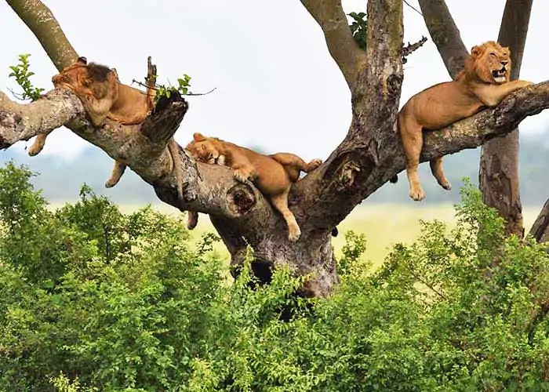
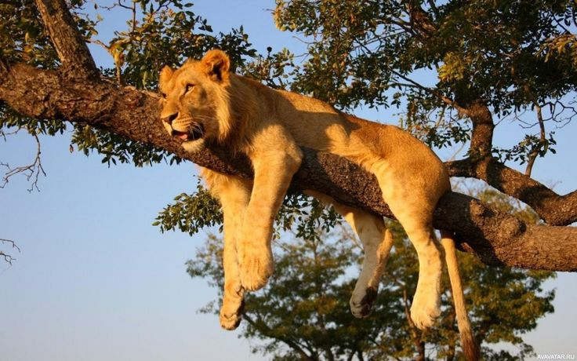

Bizning hayvonlar
Hayvonlar haqida qiziqarli faktlar
 Hayvonlarni k'orish
O'z fikringizni yozib qoldiring
Sevimli hayvoningiz qaysi
Hayvonlar haqida t'oliq ma'lumot jadvali
| hayvon | qiziqarli fakt |
|---|---|
| arslon | arslonlar kunning 20 soatini uyqu blan otkazadi |
| fil | fillar suvni ozlarini burni bilan ichishadi |